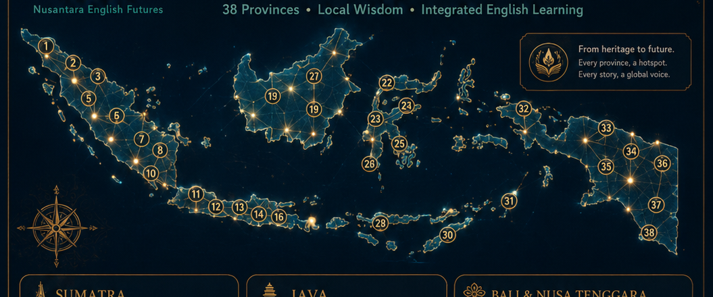

AKSANTARA
From Aksara to AI
AKSANTARA is a professional edu-cultural app that transforms Aksara Nusantara, local wisdom, oral traditions, provincial diversity, and integrated English skills into a living interactive journey. Every province becomes a 4D hotspot: culture, script, voice, vocabulary, reading, speaking, writing, QR, and ethical AI support.

Six Living
Zones
The app is not a gallery. It is an executable learning journey from heritage literacy to global English communication supported by ethical AI. Each zone is linked to province selection and active learning features.
Heritage Roots
Aksara, manuscripts, stories, voices, and provincial wisdom become the foundation for meaningful English learning.
Future Horizons
AI, QR, audio, visual exploration, and integrated-skills tasks help learners communicate globally without losing cultural identity.
Symbol System
Color & Materials
Interaction Design
Province
Hotspots
Select any province. The whole app updates automatically: Aksara Studio, Skills, Voice Atlas, AI Tutor, QR Station, and Admin statistics.

Aksara
Studio
The core of AKSANTARA: every province introduces a local script tradition, manuscript spirit, local wisdom, and English-learning transformation.
Province — Aksara
Trace or draw script-inspired forms above. This works offline and saves the selected province.
Heritage-to-English Mission
0% completed
Skills
Lab
Listening, speaking, reading, writing, vocabulary and intercultural reflection are integrated with the selected province and its Aksara heritage.
Selected Province
0 of 6 tasks completed
Voice
Atlas
Practice intelligible English while respecting local identity. The focus is clarity, confidence, rhythm, and intercultural meaning.
Ready for practice.
Pronunciation Focus
Focus
Practice Line
“Our local script and wisdom can speak to the world through English.”
Intelligibility Score
Ready
AI
Tutor
No API key is required. This offline tutor gives guided prompts based on the selected province, Aksara seed, and integrated-skill mission.
Aksantara AI
Suggested Prompts
QR
Station
Each province generates an integrated QR card for exhibition, learning station, classroom display, or dossier archive.
Every QR Unlocks
Dossier
The reference boards are used as living design direction and professional dossier materials for exhibition, proposal, and academic presentation.
Admin
Admin is protected. Unlock to manage selected province, view content, export learner progress, and reset local data.
Admin Locked
Enter owner PIN to unlock.
Selected Province
Progress Snapshot
Reset
Reset all local progress for this browser.